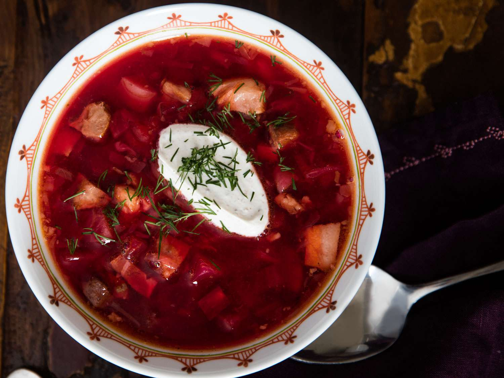

Borsht

Ingredients:
- 1 large beetroot, peeled and chopped
- 1 onion, chopped
- 2 carrots, peeled and chopped
- 2 potatoes, peeled and chopped
- 2 cloves garlic, minced
- 4 cups vegetable or beef broth
- 2 tablespoons olive oil
- 1 tablespoon tomato paste
- 1 bay leaf
- 1 teaspoon sugar
- 2 tablespoons red wine vinegar
- 1/2 cup sour cream
- Salt and pepper to taste
Instructions:
- In a large pot, heat the olive oil over medium heat. Add the chopped onion and garlic, and sauté until the onion is translucent.
- Add the chopped beetroot, carrots, and potatoes to the pot. Stir to combine with the onion and garlic.
- Add the vegetable or beef broth, tomato paste, bay leaf, sugar, and a pinch of salt and pepper. Bring the soup to a boil, then reduce the heat and simmer for 30-40 minutes, or until the vegetables are tender.
- Once the vegetables are tender, remove the bay leaf and discard. Using an immersion blender or transfer to a blender in batches, puree the soup until smooth.
- Stir in the red wine vinegar and adjust the seasoning to taste with salt and pepper.
- Serve the borscht hot, garnished with a dollop of sour cream.
Enjoy!